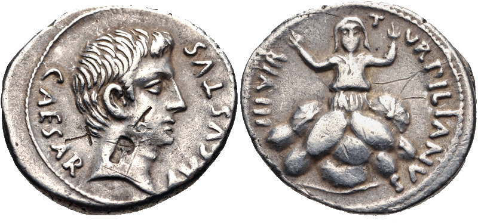

Augustus Denarius

- Find Name
- Augustus Denarius
- Description
- A silver denarius of Caesar Augustus (Octavian), first emperor of Rome, bearing his portrait and the legend CAESAR AVGVSTVS. Augustus's reign saw the empire's first systematic censuses, recorded in his own Res Gestae (28 BC, 8 BC, AD 14), and his coinage carried his image and titles into every province, including Judea, where his client king Herod ruled.
- Historical Period
- Roman
- Evidence Class
- Contextual
- Interpretations
- The coin type is genuine and ubiquitous; no claim is made that any particular denarius was handled in Judea at the census, and the exact registration Luke describes remains debated (notably the Quirinius question in Luke 2:2). The coin illustrates the emperor and his administration, not a proven census transaction.
- Alternative Names
- Denarius of Caesar Augustus
- Related Places
- Related Books
- Related People
- Scripture Illuminated
- Biblical Significance
- Luke 2:1-5 opens the nativity with Augustus's decree 'that all the world should be taxed,' sending Joseph and Mary to Bethlehem and so fulfilling Micah 5:2 without Augustus knowing it. This is the face on the money of the man whose census moved the holy family — the emperor whose power, unknowingly, served God's purpose.
- Artifact Date
- 27 BC - AD 14 (reign of Augustus)
- Current Location
- Examples in many museum collections, including the British Museum and the Metropolitan Museum of Art
- Timeline Era
- Life of Christ
Awaiting Review Not yet checked against scholarly sources. Treat its claims as provisional until this entry is reviewed. About verification
Last reviewed: not yet reviewed